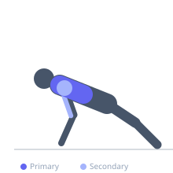

Exercise guide / Pseudo Planche Push-Up
Pseudo Planche Push-Up
The pseudo planche push-up shifts the body's weight far forward over the hands by rotating the wrists outward and leaning the torso ahead of the arms. This altered geometry dramatically increases the load on the pectorals and anterior deltoids compared to a standard push-up and builds the foundational strength required for a full planche.
Primary muscles
pectoralis major sternal
pectoralis major clavicular
Secondary muscles
deltoid anterior
triceps lateral head
Stabilizers
transverse abdominis
gluteus maximus
Equipment
No Equipment (Bodyweight)


Starting position
- Begin in a push-up position with hands placed beside the hips rather than the shoulders. Rotate the wrists so fingertips point toward the feet or sideways. Lean the shoulders significantly forward over the hands.
Setup
- Hand placement is 6–12 inches behind where you would normally place them in a push-up. The more forward the lean, the harder the exercise.
Steps
- Step 1: Position hands at hip level with fingers pointing backward or to the sides.
- Step 2: Shift the entire body forward so the shoulders are well ahead of the hands.
- Step 3: Lower the body by bending the elbows, keeping the body perfectly rigid.
- Step 4: Lower until a moderate chest stretch is felt or the nose nears the floor.
- Step 5: Press hard through the palms to return to the start, maintaining the forward lean.
Coaching cues
- Push the floor away from you, don't push yourself away from the floor
- Keep the lean — that's the whole exercise
- Squeeze the glutes to keep the hips from piking
Breathing
- Inhale as you lower. Exhale as you press back up.
Range of motion
- Lower until the nose or chest nearly touches the floor. The forward lean must be maintained at all points in the movement.
Tempo
- 3-1-2-0
Common mistakes
- Not leaning forward enough to shift load from triceps to chest
- Allowing the hips to pike upward
- Collapsing the wrists inward under load
Safety
- This exercise places high stress on the wrists — build wrist flexibility and strength first
- Progress from less forward lean to more as strength increases
- Stop immediately if you feel wrist pain
Training
- strength: 3–8 reps
- hypertrophy: 5–15 reps
- strength: 3–5 sets
- Rest: {'strength': 180, 'hypertrophy': 90}